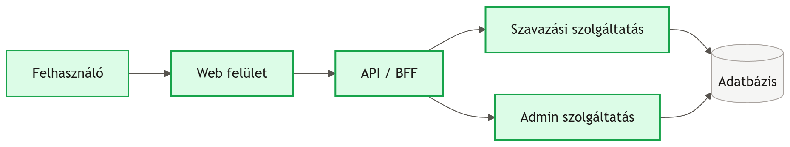
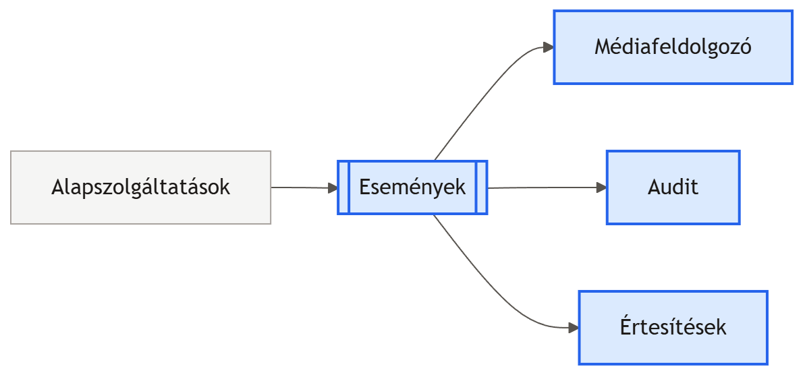
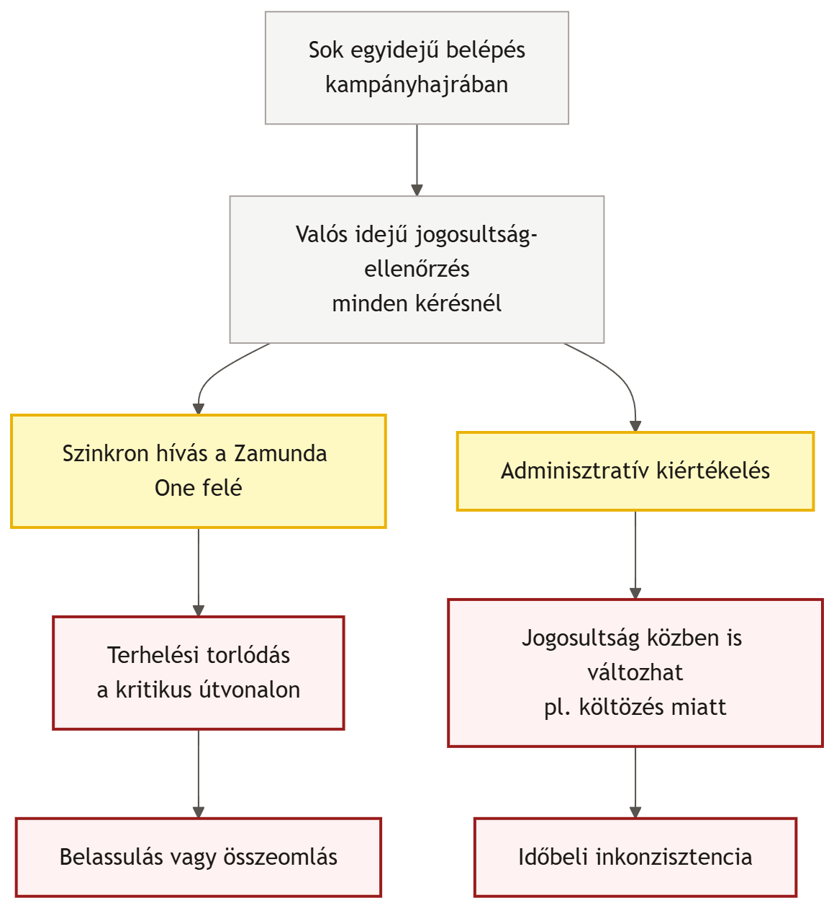
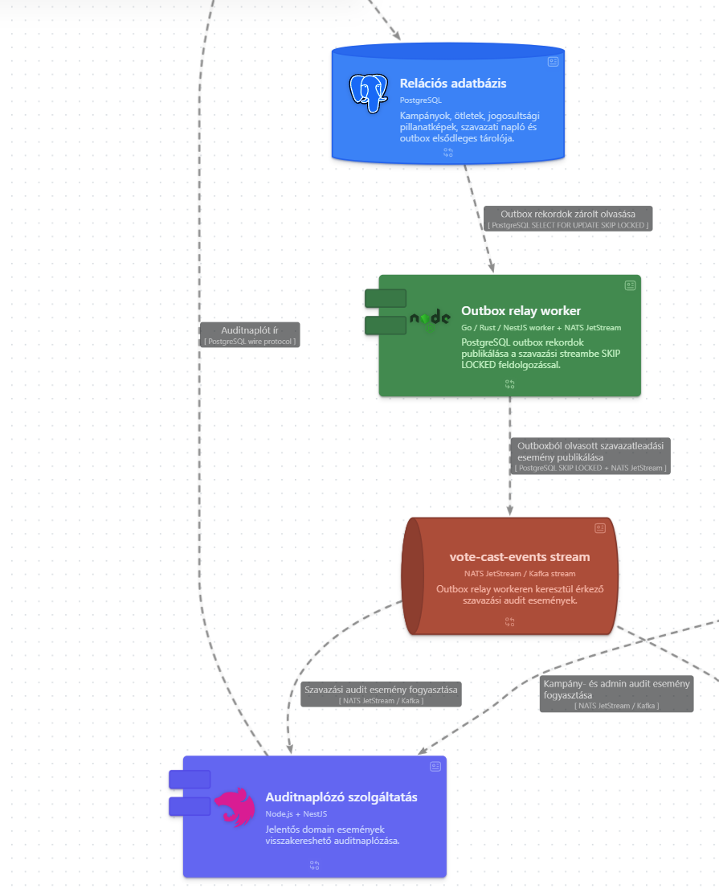

Community Choice
Közösségi javaslattételi és szavazási platform szoftverarchitektúra terve.
Hogyan építsük be technológiai szinten a bizalmat?
Egy állami, közbizalmi környezetben működő döntéstámogató platform nem engedhet meg magának kompromisszumokat. Ha a lakosok azt érzik, a rendszer manipulálható, a platform elveszíti a létjogosultságát. A szoftver felépítésének kell bizonyítania a tisztaságot.
A ZDR program szigorú elvárásai.
Klímabarát működés
Törekedni kell az erőforrások takarékos használatára.
Hálózati robusztusság
A szoftvernek gyenge vagy hiányos internetlefedettség mellett is stabilnak kell maradnia.
Dokumentáltság
Minden komoly tervezési döntést vissza kell vezetni a valós követelményekre.
Miért bukott el a két véglet?
Miért nem tiszta monolit?
Egy kampányzárás utolsó órájában, amikor a szavazási forgalom hirtelen megugrik, a teljes rendszer másolása és skálázása indokolatlan erőforrás-pazarlással járna.
Miért nem teljes mikroszerviz?
A hálózati többletterhelés, a bonyolult elosztott tranzakciók kezelése és a komplex üzemeltetés teljesen szembement volna a takarékossági elvárásokkal.
Hibrid Service-Based és Event-Driven architektúra.
A kritikus, szigorú és azonnali választ igénylő folyamatokat jól körülhatárolt szolgáltatásokba (makroszolgáltatások) zártuk. A nehézkes, időigényes, de azonnali választ nem igénylő feladatokat pedig eseményvezérelt háttérfolyamatokra bíztuk.
Azonnali válaszú folyamatok

Eseményvezérelt feldolgozás

A szétválasztott felelősségi körök.
Szavazási zóna
Szinkron és szigorú
Jogosultság-ellenőrzés, névtelenítés, szavazatok azonnali, fix rögzítése a központi adatbázisban.
Központi csatorna
Eseményvezérelt üzenetsor
Tartós, visszajátszható adatfolyam, amely továbbítja a sikeres események üzeneteit.
Háttér folyamatok
Aszinkron feldolgozás
E-mailes értesítések kiküldése és a beküldött nagyméretű képek/videók háttérben futó tömörítése.
Jogosultság vs. Teljesítmény.
Amikor egy lakos belép, azonnal el kell döntenie a rendszernek, hogy hol és miként szavazhat. De ha ezt minden bejelentkezésnél valós időben kérdezzük le az állami rendszertől (Zamunda One), szavazási csúcsidőben összeomlunk.

A Megváltoztathatatlan Jogosultsági Pillanatkép.
A kiértékelést teljesen leválasztottuk az interakcióról. A kampány indulása előtt (pl. T-24 óra) egy aszinkron háttérfolyamat előre generálja a névjegyzéket.

Névtelenség vs. Egyediség.
Ahhoz, hogy az adatbázis technológiailag, egy egyediségi szabállyal meg tudja akadályozni a duplázást, szükség van egy szavazói azonosítóra. A nyers személyes adatokat viszont a titkosság miatt nem tárolhatjuk.
Miért nem elég a sima kódolás (pl. SHA-256)?
Ha az adatbázis véletlenül kiszivárogna, a sima kódolt azonosítók külső, nagy számítási kapacitással (Rainbow Table módszerrel) viszonylag gyorsan visszafejthetők és visszakapcsolhatók lennének a valós személyekhez.
Védett Kulcskezelés és elszigetelt azonosítók.
A rendszert kiegészítettük egy dedikált Kulcskezelő Szolgáltatással (KMS). A felhasználói azonosítókból egy külső, védett kulccsal (Globális Pepper) képezünk egyedi kódot.
Elszigetelt titok
A kódoláshoz használt Globális Pepper soha, egyetlen pillanatra sem hagyja el a kulcskezelő biztonságos memóriáját, nem kerül be a fájlokba.
Nyers adatok kizárása
A szavazati adatbázis, a logfájlok és a háttérben futó üzenetek kizárólag a generált, visszafejthetetlen álneveket látják.
Mérföldkő szivárgás esetén
Ha az adatbázis teljesen kiszivárogna, a támadók akkor sem tudnák visszafejteni az azonosítókat a védett kulcs nélkül. Az adatok biztonságban maradnak.
A nem auditált mentések kockázata.
A rendszernek minden szavazatról értesítést kell küldenie a háttérben futó ellenőrző naplóba (brokerbe). De mi van akkor, ha a szavazat sikeresen bekerül a fő adatbázisba, de a hálózat abban a pillanatban megszakad, és az értesítés elvész?
A Dual-Write hiba:
Ha az alkalmazásból két külön lépésben küldjük el az adatot az adatbázisnak és a háttérsornak, hálózati anomália esetén a két rendszer állapota eltérhet egymástól.
A Transactional Outbox és a CDC alkalmazása.
A szavazat leadását és az audit eseményt a szoftverünk egyetlen, felbonthatatlan adatbázis-tranzakcióban rögzíti.
Atomi adatbázis lépés
· Szavazati rekord elmentése
· Outbox (Kimenő) rekord elmentése
· CDC / relay később továbbítja
A kettő egyszerre vagy sehogy sem teljesül, ezért nincs elveszett auditnyom.

Felkészülés az utolsó órás rohamra.
A szavazási kampányok utolsó óráiban ugrásszerű terhelés várható. A rendszert úgy készítettük fel erre, hogy közben hűek maradtunk a takarékossági alapelvekhez.
Beépített védelmi mechanizmusok:
· Kapcsolatkezelő kapu (PgBouncer): Nem engedi, hogy a hirtelen jövő kérések túlterheljék a központi adatbázist.
· Adatbázis particionálás: A szavazatokat kampányok szerint külön logikai táblákra bontottuk, így az indexek kicsik és gyorsak maradnak.
· Háttérmunkák korlátozása: A CPU-igényes feladatok (pl. videók tömörítése) a csúcsidő alatt automatikusan háttérbe szorulnak, elsőbbséget adva a szavazatoknak.
Összegzés
Záró gondolatok
• Az architekturális döntéseket végig a szignifikáns követelmények vezették.
• A cél nem technológiai kívánságlista, hanem valós problémákra adott válasz volt.
• A koncepció célzott továbbdolgozással éles állami környezet felé vihető.
• A végcél egy transzparens és manipulálhatatlan digitális demokrácia.
Köszönjük a figyelmet!